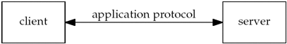
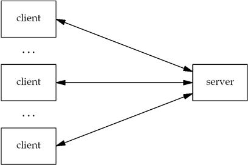
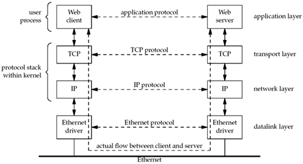
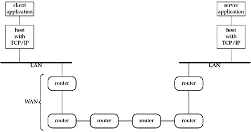

| [ Team LiB ] |
|
1.1 IntroductionWhen writing programs that communicate across a computer network, one must first invent a protocol, an agreement on how those programs will communicate. Before delving into the design details of a protocol, high-level decisions must be made about which program is expected to initiate communication and when responses are expected. For example, a Web server is typically thought of as a long-running program (or daemon) that sends network messages only in response to requests coming in from the network. The other side of the protocol is a Web client, such as a browser, which always initiates communication with the server. This organization into client and server is used by most network-aware applications. Deciding that the client always initiates requests tends to simplify the protocol as well as the programs themselves. Of course, some of the more complex network applications also require asynchronous callback communication, where the server initiates a message to the client. But it is far more common for applications to stick to the basic client/server model shown in Figure 1.1. Figure 1.1. Network application: client and server. Clients normally communicate with one server at a time, although using a Web browser as an example, we might communicate with many different Web servers over, say, a 10-minute time period. But from the server's perspective, at any given point in time, it is not unusual for a server to be communicating with multiple clients. We show this in Figure 1.2. Later in this text, we will cover several different ways for a server to handle multiple clients at the same time. Figure 1.2. Server handling multiple clients at the same time. The client application and the server application may be thought of as communicating via a network protocol, but actually, multiple layers of network protocols are typically involved. In this text, we focus on the TCP/IP protocol suite, also called the Internet protocol suite. For example, Web clients and servers communicate using the Transmission Control Protocol, or TCP. TCP, in turn, uses the Internet Protocol, or IP, and IP communicates with a datalink layer of some form. If the client and server are on the same Ethernet, we would have the arrangement shown in Figure 1.3. Figure 1.3. Client and server on the same Ethernet communicating using TCP. Even though the client and server communicate using an application protocol, the transport layers communicate using TCP. Note that the actual flow of information between the client and server goes down the protocol stack on one side, across the network, and up the protocol stack on the other side. Also note that the client and server are typically user processes, while the TCP and IP protocols are normally part of the protocol stack within the kernel. We have labeled the four layers on the right side of Figure 1.3. TCP and IP are not the only protocols that we will discuss. Some clients and servers use the User Datagram Protocol (UDP) instead of TCP, and we will discuss both protocols in more detail in Chapter 2. Furthermore, we have used the term "IP," but the protocol, which has been in use since the early 1980s, is officially called IP version 4 (IPv4). A new version, IP version 6 (IPv6) was developed during the mid-1990s and could potentially replace IPv4 in the years to come. This text covers the development of network applications using both IPv4 and IPv6. Appendix A provides a comparison of IPv4 and IPv6, along with other protocols that we will discuss. The client and server need not be attached to the same local area network (LAN) as we show in Figure 1.3. For instance, in Figure 1.4, we show the client and server on different LANs, with both LANs connected to a wide area network (WAN) using routers. Figure 1.4. Client and server on different LANs connected through a WAN. Routers are the building blocks of WANs. The largest WAN today is the Internet. Many companies build their own WANs and these private WANs may or may not be connected to the Internet. The remainder of this chapter provides an introduction to the various topics that are covered in detail later in the text. We start with a complete example of a TCP client, albeit a simple one, that demonstrates many of the function calls and concepts that we will encounter throughout the text. This client works with IPv4 only, and we show the changes required to work with IPv6. A better solution is to write protocol-independent clients and servers, and we will discuss this in Chapter 11. This chapter also shows a complete TCP server that works with our client. To simplify all our code, we define our own wrapper functions for most of the system functions that we call throughout the text. We can use these wrapper functions most of the time to check for an error, print an appropriate message, and terminate when an error occurs. We also show the test network, hosts, and routers used for most examples in the text, along with their hostnames, IP addresses, and operating systems. Most discussions of Unix these days include the term "X," which is the standard that most vendors have adopted. We describe the history of POSIX and how it affects the Application Programming Interfaces (APIs) that we describe in this text, along with the other players in the standards arena. |
| [ Team LiB ] |
|